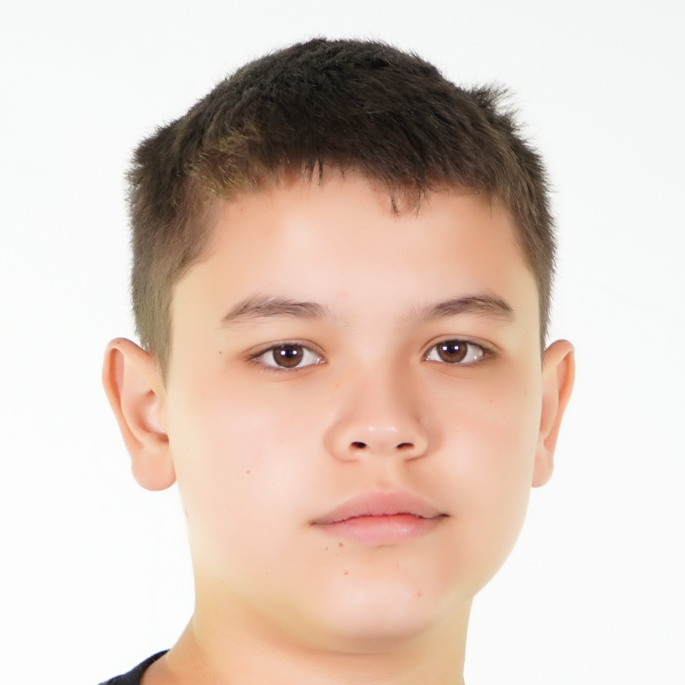

Mateus Felipe de Assis Lopes
Estudante do Curso Técnico em Desenvolvimento de Sistemas
Informações Pessoais
Idade: 14 anos
Cidade: Manoel Ribas - PR
Email: mateusfelipedeassislopes@gmail.com
Telefone: (00) 00000-0000
Objetivo
Busco minha primeira oportunidade para aprender, desenvolver minhas habilidades e ganhar experiência na área de tecnologia. Tenho como objetivo o ensino superior na área de medicina.
Formação
Curso: Técnico em Desenvolvimento de Sistemas
Instituição: Profª Reni Correia Gamper
Ano: 1º ano
Conhecimentos
- Java script básico
- HTML básico
- CSS básico
- Lógica de programação
- Informática básica conhecimento básico em banco de dados
Habilidades
- Facilidade de apendizado principalmente na área de exatas
- Responsabilidade
- Organização
- Vontade de aprender
- Bom em matemática
Projetos
Meu primeiro site
Projeto Agrinho 2026 com o tema"Agro forte futuro sustentavel: equilibrio entre produçao e meio ambiente"
Projeto de Robótica
Participação em atividade prática envolvendo programação, sensores ou montagem de circuitos.